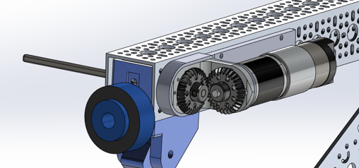
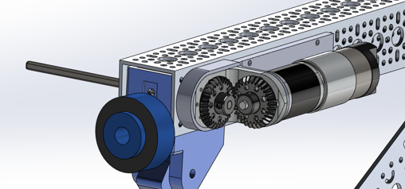

Experience
Spaceflight Systems Engineering Intern
At Axiom Space, I worked through a lot of complex problems in EVA and Robotics.
During my internships, I was a flight operator, systems engineer, and EVA/Robotics analyst.
Lunar Terrain Vehicle Intern
Designed and integrated the edge key displays for a lunar vehicle, balancing system and display requirements while working with cross-functional teams to ensure consistency in design standards.


Manufacturing Laboratory Technician
Instructed students in the safe operation of manufacturing equipment, including CNC machinery, welding techniques, and 3D printing. Developed lab curriculum for additive manufacturing including an activity where students designed to optimize strenght to weight ratio of a given part, printed it themselves, and tested it with a tensile tester.
 
